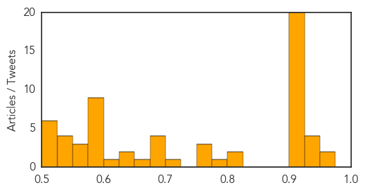
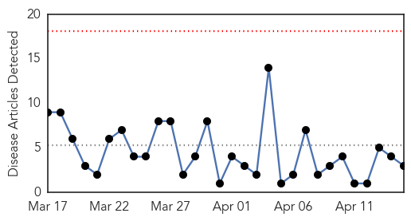
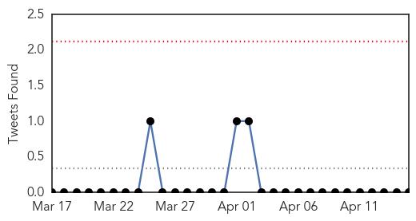
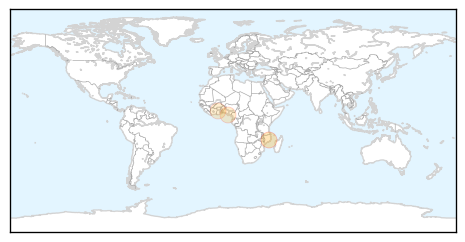
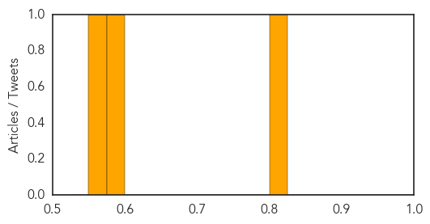

Unknown
30-Day Web Trend
0 alerts, 0 warnings
30-Day Twitter Trend
0 alerts, 0 warnings

Article Locations

Article Confidences
Top Articles:
- 0.957
- Hawthorn Woods' Bark in the Park postponed due to dog flu
- 0.955
- Food poisoning cases in Sultanate at a minimal
- 0.945
- Niger isolates suspected bird flu farm as region takes precautions
- 0.944
- Health Experts Monitor Deadly Tick-Borne Virus
- 0.941
- NCDC to study Goa deaths due to mysterious virus
- 0.930
- What to Know About Antibiotic-Resistant Shigella Superbug
- 0.917
- Chicago Tribune
- 0.917
- Chicago Tribune
- 0.917
- Chicago Tribune
- 0.917
- Chicago Tribune
- 0.917
- Chicago Tribune
- 0.917
- Chicago Tribune
- 0.917
- Chicago Tribune
- 0.917
- Chicago Tribune
- 0.917
- Chicago Tribune
- 0.917
- Chicago Tribune
- 0.917
- Chicago Tribune
- 0.917
- Chicago Tribune
- 0.917
- Chicago Tribune
- 0.917
- Chicago Tribune
- 0.917
- Chicago Tribune
- 0.917
- Chicago Tribune
- 0.917
- Chicago Tribune
- 0.917
- Chicago Tribune
- 0.917
- Chicago Tribune
- 0.910
- The world windows to Thailand
- 0.823
- Medical researcher urges governments to prioritise elephantiasis
- 0.823
- Medical researcher urges government to prioritize elephantiasis
- 0.783
- An unusual version of a gene appears to protect against enteric fever
- 0.775
- Deadly Powassan virus on the rise
- 0.767
- Free flu clinic at the Cherry Auction
- 0.757
- Tuberculosis case at Denver's Metro State not an outbreak concern
- 0.705
- Fatal Brain Disease in US Man Likely Came from UK Beef
- 0.684
- Could a Norovirus Vaccine Become Reality?
- 0.683
- Cruel blow to sanctuary
- 0.681
- Update: Security and Humanitarian Consequences amid Conflict in Yemen - Yemen
- 0.680
- Ending the ‘Neglect’ in Neglected Tropical Diseases
- 0.663
- Hundreds of dogs sickened by flu strain in Midwest
- 0.632
- Telangana government confirms first bird flu outbreak in Thorrur
- 0.629
- Rat lungworm disease spreads fear across Hawaii Island
- 0.601
- Surveys miss majority of poisonings, underestimate cost by billions
- 0.599
- 14-member Sindh team briefed about Punjab health roadmap
- 0.598
- Q&A: What is listeria?
- 0.597
- Kienböck’s disease may progress to fragmentation within 6 months
- 0.589
- Health can tackle (and measure) inequities
- 0.588
- District hospitals given a pass
- 0.583
- What to know about recent recalls and listeria
- 0.580
- Montgomery County, Maryland, Horse Tests Positive for EHV-1
- 0.578
- CBCP exec: Many persons with HIV/AIDS come from broken families
- 0.577
- En Tanzanie, l’opposition rêve d’alternance
Showing top 50 articles...
Top Tweets:
-
No tweets found for Apr 15, 2015
Cholera
30-Day Web Trend
0 alerts, 0 warnings

30-Day Twitter Trend
0 alerts, 0 warnings

Article Locations
Article Confidences
Top Articles:
Top Tweets:
-
No tweets found for Apr 15, 2015